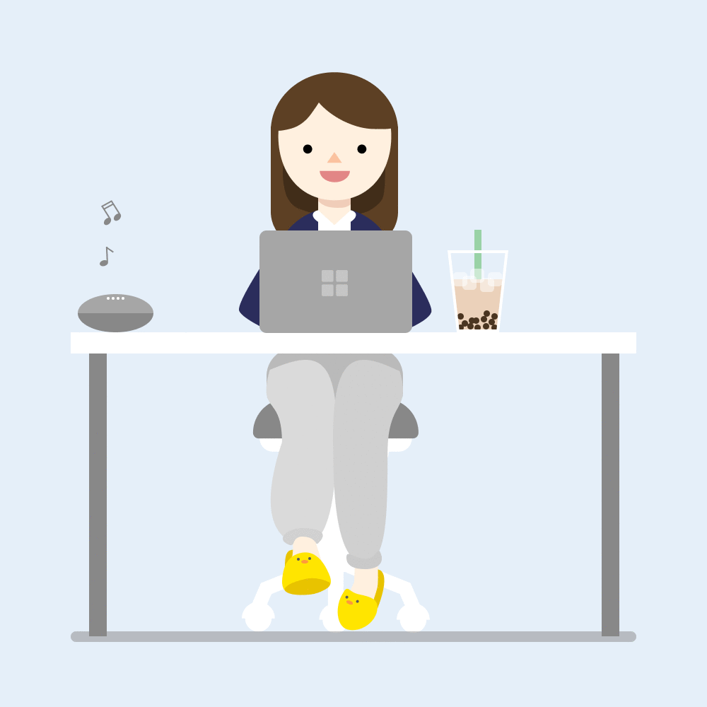

Hi, I'm Claire.
I help connect technology and people.
I work at the intersection of design, business, and technology to create inclusive, people-oriented digital experiences.
Looking forward to graduating in May 2022!
A little about me.
Nice to meet you, I’m Claire! I'm an undergraduate student studying Business Administration and Human-Computer Interaction at Carnegie Mellon University in Pittsburgh, PA.
I'm passionate about designing informed, inclusive, and people-oriented experiences .
With my multidisciplinary background in Business and HCI, I have a unique perspective to offer in utilizing UX design to identify and bridge the gaps between businesses and people.
I currently work as a UX designer for Crowd Audit, an NSF-sponsored project that aims to place the power to audit algorithmic bias in the hands of everyday users.

Me, outside of work.
Outside of school and work, I enjoy creating and expressing myself through a variety of outlets, like bullet journaling and experimenting in my kitchen.
My new year's resolution was to eat healthier, so I've been testing healthy alterations to a lot of my favorite Korean recipes!
I also spend a lot of time with my lovely dog, a long-haired Chihuahua named Louie. Our favorite activities include napping and eating snacks.